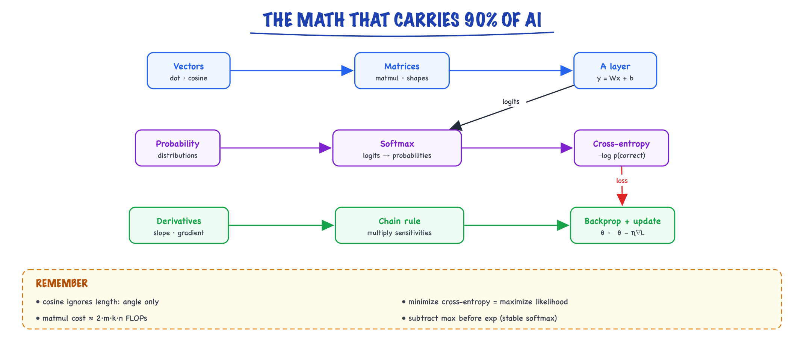

The math you need // Math & ML foundations
Vectors, matrices, derivatives, the chain rule, probability, cross-entropy and softmax, each with worked numbers.
01 — At a glance

Vectors and matrices represent, derivatives and the chain rule learn, probability and cross-entropy score. Each feeds the next.
02 — New words
| Word | Meaning |
|---|---|
| Vector | An ordered list of numbers. In AI it stands for one thing (a word, a document, a hidden state) as a point or direction in space. |
| Dot product | Multiply two vectors position by position and add the results. Large and positive when they point the same way. |
| Cosine similarity | The dot product divided by both lengths. Measures only the angle between vectors, from −1 to 1. |
| Matrix | A table of numbers. Multiplying a vector by a matrix does many dot products at once and maps one vector space to another. |
| Logits | The raw scores a model gives each possible output before they are turned into probabilities. Any real number. |
| Softmax | Turns a list of logits into probabilities: exponentiate each one, then divide by the total. |
| Log-likelihood | The logarithm of the probability a model gave to what actually happened. Training makes it as large as possible. |
| Cross-entropy | The average of −log(probability given to the correct answer). The loss almost every classifier and language model minimises. |
| Entropy | How spread out a probability distribution is. Zero when one outcome is certain. |
| KL divergence | How much extra surprise you get by using distribution Q when the truth is P. Zero when they match; not symmetric. |
| Derivative / gradient | How fast an output changes when you nudge one input; the gradient is the list of those rates for every parameter. |
| Chain rule | The rule for differentiating a function of a function: multiply the rates along the path. Backpropagation is this rule applied to a whole network. |
| Learning rate \(\eta\) | The size of the step taken against the gradient in each update. |
| Backpropagation | Chain rule through the computation graph; computes the gradients. |
The full explanation
03 — The question
Every model in this course, from logistic regression to a 400-billion-parameter LLM, does the same three things with numbers. It represents inputs as vectors, scores possible outputs and turns the scores into probabilities, and learns by nudging its numbers in the direction that makes the right answer more probable. That needs four pieces of maths: vectors and matrices, softmax and probability, cross-entropy, and derivatives with the chain rule. Nothing else is required to follow the rest of the course.
The questions an interviewer asks about this material are rarely "define a gradient". They are:
- Why do retrieval systems use cosine similarity rather than the raw dot product?
- Why is cross-entropy the loss for classification and language modelling, not squared error?
- What is the gradient of softmax followed by cross-entropy, and why is it so simple?
- Why do implementations subtract the maximum before softmax, and work with log-probabilities instead of probabilities?
We will answer all four with one running example: the smallest possible language model. It has read "The cat sat on the" and summarised that context as a 3-number vector \(h = [1.0,\ 2.0,\ -1.0]\). It must choose the next word from a vocabulary of three: mat, sofa, moon. Each word has its own 3-number vector, stacked as the rows of a matrix \(W\):
| Word | Row of \(W\) |
|---|---|
| mat | [1.0, 0.5, 0.5] |
| sofa | [0.5, 0.5, 0.5] |
| moon | [0.5, −0.5, 0.5] |
The correct next word is mat. We will score the words, turn scores into probabilities, measure the error, work out which numbers to change, and change them. A real LLM does exactly this with vectors of a few thousand numbers and a vocabulary of about 100,000.
04 — Step 1: vectors and the dot product
A vector is a list of numbers that we treat as a point in space. Three numbers is a point in 3-D; 4,096 numbers is a point in a 4,096-dimensional space you cannot picture but can compute with in exactly the same way.
The dot product of two vectors multiplies them position by position and adds:
\[ a \cdot b = \sum_i a_i b_i \]For mat and sofa: \(1.0 \times 0.5 + 0.5 \times 0.5 + 0.5 \times 0.5 = 1.0\). For mat and moon: \(0.5 - 0.25 + 0.25 = 0.5\).
Read the dot product as weighted agreement. Each position is a feature; where both vectors are positive (or both negative) the product adds, where they disagree it subtracts. Moon disagrees with mat on the second number, so their dot product is lower.
The dot product also grows with length. The length (or norm) of a vector is \(\|a\| = \sqrt{a \cdot a}\): for mat, \(\sqrt{1.5} = 1.225\); for sofa, \(\sqrt{0.75} = 0.866\). If we multiplied sofa's vector by 10, its dot product with mat would jump from 1.0 to 10.0, although its direction, and so its "meaning", has not changed. Cosine similarity removes length:
\[ \cos(a, b) = \frac{a \cdot b}{\|a\|\,\|b\|} \]| Pair | Dot product | Cosine |
|---|---|---|
| mat, sofa | 1.00 | 0.943 |
| mat, moon | 0.50 | 0.471 |
| sofa, moon | 0.25 | 0.333 |
| mat, 10 × sofa | 10.0 | 0.943 |
Cosine ranks mat and sofa as near-synonyms (things you sit on) and is unchanged by the scaling. That answers the first interview question: vector length often varies for reasons unrelated to relevance, so search uses cosine, or normalises every vector to length 1 once, after which cosine equals the dot product and search is one matrix multiply. See Embeddings for how those vectors are trained.
05 — Step 2: a matrix is many dot products at once
Our model needs one score per word: how well each word's vector agrees with the context vector \(h\). That is three dot products, and writing the word vectors as rows of a matrix lets us do them in one operation, the matrix-vector product \(z = W h\):
\[ z = \begin{bmatrix} 1.0 & 0.5 & 0.5 \\ 0.5 & 0.5 & 0.5 \\ 0.5 & -0.5 & 0.5 \end{bmatrix} \begin{bmatrix} 1.0 \\ 2.0 \\ -1.0 \end{bmatrix} = \begin{bmatrix} 1.0 + 1.0 - 0.5 \\ 0.5 + 1.0 - 0.5 \\ 0.5 - 1.0 - 0.5 \end{bmatrix} = \begin{bmatrix} 1.5 \\ 1.0 \\ -1.0 \end{bmatrix} \]These three numbers are the logits: raw scores, one per word. Mat leads, sofa is close, moon is far behind.
The habit that prevents most bugs is tracking shapes. \(W\) is (vocabulary × hidden) = (3 × 3) here; \(h\) is (hidden) = (3); the result is (vocabulary) = (3). The rule is that inner dimensions must match and disappear: (3 × 3) times (3) gives (3). In a real model this exact operation, called the unembedding or LM head, has \(W\) of shape (100,000 × 4,096) and is applied to every position of every sequence in a batch at once: an input of shape (batch, sequence, 4,096) times the transposed matrix gives logits of shape (batch, sequence, 100,000).
Cost follows from the shapes: an \(m \times n\) matrix times a vector is \(2mn\) floating-point operations (one multiply and one add per entry), so the LM head alone is \(2 \times 4{,}096 \times 100{,}000 \approx 0.82\) billion operations per token. Memory too: logits for 8 sequences of 2,048 tokens are 1.6 billion numbers, 6.6 GB in 32-bit floats, which is why training code computes the loss in chunks.
A neural network is mostly a stack of such matrix transformations with simple non-linear functions between them (Neural networks).
06 — Step 3: softmax turns scores into probabilities
Logits are not probabilities: they can be negative and they do not add up to 1. Softmax fixes both:
\[ p_i = \frac{e^{z_i}}{\sum_j e^{z_j}} \]Here \(e \approx 2.718\), and \(e^{z}\) is always positive. For our logits:
| Word | \(z_i\) | \(e^{z_i}\) | \(p_i\) |
|---|---|---|---|
| mat | 1.5 | 4.482 | 0.592 |
| sofa | 1.0 | 2.718 | 0.359 |
| moon | −1.0 | 0.368 | 0.049 |
| sum | 7.568 | 1.000 | |
Why the exponential? It makes every value positive whatever the sign of the logit, and it turns differences of logits into ratios of probabilities: \(p_{\text{mat}} / p_{\text{sofa}} = e^{1.5 - 1.0} = e^{0.5} = 1.649\), and you can check \(0.592 / 0.359 = 1.649\). And it pairs with the logarithm in the loss (Step 5) to give a very clean gradient (Step 6).
Because only differences matter, adding the same constant to every logit changes nothing. Implementations exploit this for numerical stability. A 32-bit float overflows above about \(e^{88}\), and real logits can be large. Computing softmax of [1000, 999, 998] naively gives "infinity divided by infinity", which is NaN. Subtracting the maximum first gives softmax of [0, −1, −2] = [0.665, 0.245, 0.090], the same correct answer with no overflow. Every library does this; if you write your own softmax, do it too.
The denominator has a name worth knowing: \(\log \sum_j e^{z_j}\) is the log-sum-exp, here \(\log 7.568 = 2.024\). It is a smooth maximum (a little above the true maximum, 1.5) and appears directly in the loss.
07 — Step 4: probability, likelihood, and why we use logs
The model has given mat probability 0.592. Suppose it goes on to give the correct next two words probabilities 0.30 and 0.05. The probability of the whole three-word continuation is the product (each step is conditioned on the ones before):
\[ P(\text{sequence}) = 0.592 \times 0.30 \times 0.05 = 0.0089 \]Products of probabilities shrink fast. A 400-token answer where each correct token gets probability 0.1 has probability \(0.1^{400} = 10^{-400}\), far below the smallest number a 64-bit float can hold (about \(10^{-308}\)), so the computer rounds it to exactly 0, and every comparison between two such answers is lost. In 32-bit floats it reaches 0 after about 45 such tokens.
The fix is to work with logarithms. The log of a product is the sum of the logs, so the same 400-token answer has log-probability \(400 \times \log 0.1 = -921.0\), a perfectly ordinary number. Logs also preserve order (a higher probability has a higher log-probability), so maximising one maximises the other.
The probability a model assigns to the data it actually saw is the likelihood; training a language model means making the log-likelihood of the training text as high as possible. Flip the sign so lower is better and you have the loss of the next step. (API "logprobs" are negative for the same reason: \(\log p \le 0\) when \(p \le 1\).)
08 — Step 5: cross-entropy, entropy and KL
The loss for one prediction is the negative log-probability of the correct answer:
\[ \mathcal{L} = -\log p_{\text{correct}} \]For our example, \(-\log 0.592 = 0.524\). Had the correct word been moon, the loss would be \(-\log 0.049 = 3.024\). This is cross-entropy in its everyday form. It is a fine that grows without limit as the model becomes confidently wrong: probability 0.5 costs 0.69, probability 0.01 costs 4.61, probability 0 costs infinity. Averaged over every token in a training set, it is the number on every LLM training curve.
Cross-entropy also has a direct formula from the logits, which is how libraries compute it (no division, no tiny probabilities):
\[ \mathcal{L} = \log \sum_j e^{z_j} - z_{\text{correct}} = 2.024 - 1.5 = 0.524 \]Three related quantities come from the same idea:
- Perplexity is \(e^{\text{mean loss}}\). For the three-token example in Step 4, the losses are 0.524, 1.204 and 2.996, the mean is 1.575 and the perplexity is 4.83: the model was, on average, as unsure as if choosing uniformly among about 4.8 words. Lower is better; a perfect model has perplexity 1.
- Entropy \(H(p) = -\sum_i p_i \log p_i\) measures how spread out a single distribution is. Ours is 0.825 nats (1.19 bits); a uniform choice among three words would be \(\log 3 = 1.099\) nats.
- KL divergence \(\mathrm{KL}(q \,\|\, p) = \sum_i q_i \log \frac{q_i}{p_i}\) is the extra loss from predicting \(p\) when the truth is distributed as \(q\). It is exactly cross-entropy minus entropy. If the "true" next-word distribution were \(q = [0.9, 0.05, 0.05]\), then \(H(q, p) = 0.674\), \(H(q) = 0.394\), and \(\mathrm{KL}(q \,\|\, p) = 0.280\).
KL is not a distance: \(\mathrm{KL}(p \,\|\, q) = 0.459\), a different number. The direction matters in practice. RLHF and DPO penalise \(\mathrm{KL}(\pi_\theta \,\|\, \pi_{\text{ref}})\), the tuned model measured against the reference, which punishes the tuned model for putting probability where the reference put almost none. See DPO.
Why not squared error? Suppose the correct class gets probability 0.01. With cross-entropy, the gradient on that class's logit is \(p - 1 = -0.99\): a strong push. With squared error on a sigmoid output, it is \(2(p-1)\,p\,(1-p) = -0.0196\), fifty times weaker, because the sigmoid is flat at its extremes. Squared error learns slowest exactly when the model is most wrong. Cross-entropy is also what maximum likelihood gives you, so it is not an arbitrary choice.
09 — Step 6: derivatives, and the gradient of the loss
To improve the model we need to know, for every number in it, which direction to nudge it to lower the loss, and how strongly the loss reacts. That rate is the derivative: the change in output per tiny change in input. For a function of many inputs, the list of derivatives with respect to each is the gradient, written \(\nabla\).
You can always measure a derivative numerically: nudge the mat logit up and down by \(\epsilon = 0.0001\), recompute the loss, and divide the change by \(2\epsilon\). That gives −0.4078: raising mat's logit lowers the loss at about 0.41 times the rate.
For softmax followed by cross-entropy there is an exact formula, and it is the most useful result in this lesson:
\[ \frac{\partial \mathcal{L}}{\partial z_i} = p_i - y_i \]where \(y\) is the one-hot target: 1 for the correct word, 0 for the others. For us, \(y = [1, 0, 0]\), so:
\[ \frac{\partial \mathcal{L}}{\partial z} = [0.592 - 1,\ \ 0.359 - 0,\ \ 0.049 - 0] = [-0.408,\ \ 0.359,\ \ 0.049] \]The first entry matches the numerical estimate. The meaning is direct: predicted minus actual. Push the correct word's logit up by how much probability it is missing; push every wrong word's logit down by how much probability it wrongly took. Sofa gets most of the blame because it took most of the misplaced probability. The entries always sum to zero, because probability taken from one word must go to another.
Where the formula comes from, briefly: \(\mathcal{L} = \log\sum_j e^{z_j} - z_{\text{correct}}\). The derivative of the log-sum-exp term with respect to \(z_i\) is \(e^{z_i}/\sum_j e^{z_j} = p_i\); the derivative of \(-z_{\text{correct}}\) is −1 for the correct word and 0 otherwise. Subtract and you have \(p - y\). The exponential in softmax and the log in the loss cancel each other, which is why the pair is always fused into one operation in libraries.
10 — Step 7: the chain rule carries the gradient backwards
The logits are not parameters; \(W\) and (in a full network) the layers that produced \(h\) are. The chain rule connects them: if the loss depends on \(z\), and \(z\) depends on \(W\), then the rate of change of the loss with respect to \(W\) is the product of the rates along the path.
Since \(z_i = \sum_k W_{ik} h_k\), nudging \(W_{ik}\) changes \(z_i\) at rate \(h_k\) and leaves the other logits alone. So:
\[ \frac{\partial \mathcal{L}}{\partial W_{ik}} = \frac{\partial \mathcal{L}}{\partial z_i} \cdot h_k \qquad\text{i.e.}\qquad \nabla_W \mathcal{L} = (p - y)\, h^{\top} \]That is an outer product: every logit-gradient times every input value, a 3 × 3 table:
| Row | \(\times h_1 = 1.0\) | \(\times h_2 = 2.0\) | \(\times h_3 = -1.0\) |
|---|---|---|---|
| mat (−0.408) | −0.408 | −0.816 | +0.408 |
| sofa (+0.359) | +0.359 | +0.718 | −0.359 |
| moon (+0.049) | +0.049 | +0.097 | −0.049 |
A numerical check on one entry (nudge \(W_{\text{mat},2}\) by ±0.0001) gives −0.8156, matching. Read the table: the update will move mat's row toward \(h\) and sofa's row away from it, in proportion to how much each was to blame and how large each input feature was.
The same rule gives the gradient with respect to the input, \(\nabla_h \mathcal{L} = W^{\top}(p - y) = [-0.204,\ -0.049,\ 0.0]\). In a deep network that vector is handed to the layer below, which applies the chain rule again to its own weights, and so on down. That is all backpropagation is: the chain rule applied layer by layer from the loss back to the input, reusing each layer's result for the one below.
Why its efficiency matters: a numerical gradient needs two loss evaluations per parameter, 14 billion forward passes for one step of a 7-billion-parameter model. Backpropagation gets every derivative in one backward pass that costs about twice a forward pass. You never write it by hand; frameworks record the operations and apply the chain rule for you (autograd in PyTorch).
11 — Step 8: one step of gradient descent
The gradient points in the direction that increases the loss fastest. So step the other way, by a distance set by the learning rate \(\eta\):
\[ W \leftarrow W - \eta\, \nabla_W \mathcal{L} \]With \(\eta = 0.5\), mat's row moves from [1.0, 0.5, 0.5] to [1.204, 0.908, 0.296]. Recompute everything with the new \(W\):
| \(\eta\) | New logits (mat, sofa, moon) | \(p_{\text{mat}}\) | Loss |
|---|---|---|---|
| 0 (before) | 1.50, 1.00, −1.00 | 0.592 | 0.524 |
| 0.1 | 1.74, 0.78, −1.03 | 0.692 | 0.368 |
| 0.5 | 2.72, −0.08, −1.15 | 0.925 | 0.078 |
| 1.0 | 3.95, −1.16, −1.29 | 0.989 | 0.011 |
One step and the model prefers mat much more strongly. On a single example, a bigger step looks strictly better, but that is an illusion of the toy: a real model is trained on millions of examples that pull in different directions, and the loss surface curves. On a curved surface a step that is too big overshoots. Take the simplest curved loss, \((w - 3)^2\), starting at \(w = 0\):
- \(\eta = 0.1\): \(w\) goes 0.6, 1.08, 1.46, 1.77, 2.02, … steadily toward 3.
- \(\eta = 0.9\): 5.4, 1.08, 4.54, 1.77, 3.98, … oscillating, slowly settling.
- \(\eta = 1.1\): 6.6, −1.32, 8.18, −3.22, 10.46, … each step overshoots further. Training has diverged.
That oscillate-then-explode pattern is what a learning rate that is too high looks like on a real loss curve: spikes, then NaN. Schedules and adaptive optimisers such as Adam are in Neural networks.
12 — Step 9: averages, noise, and how sure you can be
Real training never computes the gradient over the whole dataset; it averages over a random mini-batch of examples. That average is an estimate, and estimates have noise. The spread of an average of \(B\) independent samples is the spread of one sample divided by \(\sqrt{B}\). Simulated with per-example values whose standard deviation is 4.0: a batch of 1 gives an estimate with spread 4.0, a batch of 16 gives 1.0, a batch of 256 gives 0.25. Sixteen times the batch buys four times less noise, not sixteen, which is why learning rate and batch size are tuned together.
The same law governs every evaluation you will run. If a prompt change moves accuracy on 200 test questions from 82% to 85%, the standard error of the new score is \(\sqrt{0.85 \times 0.15 / 200} = 0.025\), so a 95% interval is roughly 85% ± 5%, which contains 82%. The "improvement" could be six questions flipping by luck. With 2,000 questions the standard error falls to 0.008 and a 3-point gain becomes believable. Evals builds on exactly this.
13 — A worked example: the whole loop in one table
Here is everything above on one page, the exact sequence a language model runs for every token of every training example:
| Stage | Operation | Our numbers |
|---|---|---|
| Represent | context vector \(h\) | [1.0, 2.0, −1.0] |
| Score | \(z = W h\) | [1.5, 1.0, −1.0] |
| Normalise | \(p = \mathrm{softmax}(z)\) | [0.592, 0.359, 0.049] |
| Loss | \(-\log p_{\text{mat}}\) | 0.524 |
| Gradient at logits | \(p - y\) | [−0.408, 0.359, 0.049] |
| Gradient at weights | \((p - y)\,h^{\top}\) | 3 × 3 table in Step 7 |
| Gradient to layer below | \(W^{\top}(p - y)\) | [−0.204, −0.049, 0.0] |
| Update (\(\eta = 0.5\)) | \(W \leftarrow W - \eta \nabla_W\) | loss 0.524 → 0.078 |
Repeating the update three more times at \(\eta = 0.5\) takes the loss to 0.055, 0.043, 0.035: each step helps less, because \(p - y\) shrinks as the model gets it right. Examples the model already gets right contribute almost no gradient; confidently wrong ones contribute the most.
14 — Which maths, when
| When you are… | The maths you are using | The check that saves you |
|---|---|---|
| Building retrieval or dedup | Dot product, cosine, normalisation | Is the index metric the same as the query metric? Are vectors normalised? |
| Reading a training curve | Cross-entropy, perplexity | Does the first-step loss equal \(\log V\) for a vocabulary of \(V\) (the uniform guess)? |
| Choosing decoding settings | Softmax, temperature, entropy | Temperature divides logits; it never reorders them (Decoding). |
| Writing a custom loss or layer | Chain rule, gradients | Compare autograd with a finite-difference estimate on a tiny input. |
| Preference tuning | Log-probabilities, KL | Which direction is the KL, and what is it measured against? |
| Comparing two prompts or models | Standard error, sample size | Is the difference larger than about two standard errors? |
15 — In code: the running example, verified two ways
import numpy as np h = np.array([1.0, 2.0, -1.0]) # context vector W = np.array([[1.0, 0.5, 0.5], # mat [0.5, 0.5, 0.5], # sofa [0.5, -0.5, 0.5]]) # moon y = np.array([1.0, 0.0, 0.0]) # correct word: mat def forward(W): z = W @ h # logits p = np.exp(z - z.max()); p /= p.sum() # stable softmax loss = np.log(np.exp(z - z.max()).sum()) + z.max() - z[0] # logsumexp - z_correct return z, p, loss z, p, loss = forward(W) grad_W = np.outer(p - y, h) # chain rule: (p - y) h^T # finite-difference check on one weight eps = 1e-4 Wp, Wm = W.copy(), W.copy(); Wp[0, 1] += eps; Wm[0, 1] -= eps numeric = (forward(Wp)[2] - forward(Wm)[2]) / (2 * eps) print("logits", z.round(3), "probs", p.round(3), "loss", round(loss, 3)) print("dL/dz", (p - y).round(3)) print("dL/dW[mat,1] analytic", round(grad_W[0, 1], 4), "numeric", round(numeric, 4)) print("loss after one step (lr 0.5):", round(forward(W - 0.5 * grad_W)[2], 3))
It prints the logits [1.5, 1.0, −1.0], probabilities [0.592, 0.359, 0.049], loss 0.524, the gradient [−0.408, 0.359, 0.049], matching analytic and numeric values of −0.8156, and a loss of 0.078 after one step. The same computation with PyTorch's autograd, which applies the chain rule for you:
import torch import torch.nn.functional as F h = torch.tensor([1.0, 2.0, -1.0]) W = torch.tensor([[1.0, 0.5, 0.5], [0.5, 0.5, 0.5], [0.5, -0.5, 0.5]], requires_grad=True) logits = W @ h loss = F.cross_entropy(logits.unsqueeze(0), torch.tensor([0])) # fused softmax + -log p loss.backward() # backpropagation print(round(loss.item(), 3)) # 0.524 print(W.grad[0].numpy().round(3)) # [-0.408 -0.816 0.408], the mat row of the table
16 — The math you actually need (and no more)
Four ideas carry ~90% of applied AI: vectors, gradients, probabilities, and "is this signal or luck." Learn each, use it immediately, return for depth only when something forces you to.
A warning before the ideas: the failure mode in AI math is not "didn't learn enough" — it's learning it as symbols instead of as operations you can run. Every formula in this topic has a five-line NumPy translation, and you should type each one. The symbols stick when your fingers have executed them.
17 — Linear algebra: representation
A vector is an ordered list of numbers — one example, one token, one direction in feature space. A matrix is a table of numbers and a transformation: multiplying W·x maps a d-dimensional representation to an m-dimensional one. Neural nets are stacks of exactly this.
dot product x·y = Σ xᵢyᵢ "weighted agreement" — big when they point the same way norm ‖x‖ = √(x·x) magnitude cosine cos(x,y) = x·y / (‖x‖‖y‖) angle only, ignores magnitude → similarity ∈ [-1, 1]
Worked numbers, because the intuition lives in them. Take x = [1, 2, 3] and y = [-1, 0, 1]. The dot product is (1·−1) + (2·0) + (3·1) = 2. The norms are ‖x‖ = √14 ≈ 3.742 and ‖y‖ = √2 ≈ 1.414. So cosine similarity is 2 / (3.742 × 1.414) ≈ 0.378 — mildly aligned. Now scale y by 100: the dot product becomes 200 (huge), but cosine is still 0.378. That invariance is the entire reason retrieval systems use cosine: a long document should not look "more similar" just because its embedding has a bigger norm.
import numpy as np def cosine(x: np.ndarray, y: np.ndarray) -> float: denom = np.linalg.norm(x) * np.linalg.norm(y) if denom == 0.0: # zero vector: similarity undefined raise ValueError("cosine undefined for zero vectors") return float(x @ y / denom) x = np.array([1.0, 2.0, 3.0]) y = np.array([-1.0, 0.0, 1.0]) assert abs(cosine(x, y) - 0.3780) < 1e-3 assert abs(cosine(x, 100 * y) - cosine(x, y)) < 1e-12 # magnitude-invariant # Production trick: normalize once, then cosine == dot product. # Vector DBs do this so similarity search is a single matmul. def normalize(v): return v / np.linalg.norm(v, axis=-1, keepdims=True) E = normalize(np.random.randn(10_000, 768)) # 10K document embeddings q = normalize(np.random.randn(768)) # one query scores = E @ q # 10K cosine sims in one matmul top5 = np.argsort(-scores)[:5]
Embedding search (Knowledge & RAG) is literally this: turn "semantically similar" into "small angle between vectors." Also worth knowing: matrix multiplication = composition of transformations; SVD/low-rank = compressing a matrix into fewer independent directions. A 768×768 weight update has 589,824 numbers, but if the useful change lives in 8 independent directions, two thin matrices of 768×8 (12,288 numbers, ~2% of the full size) capture it — this is exactly what makes LoRA in Fine-tuning & alignment cheap.
Similarity gotchas that bite in production
- Dot product on unnormalized vectors silently rewards embeddings with large norms — often long or repetitive documents. Your "most relevant" results become your longest ones. Normalize, or use cosine explicitly.
- Mixing metrics between index and query time. An index built for L2 distance queried as if scores were cosine gives you inverted rankings on some vectors. Check your vector DB's default — they differ.
- float16 dot products over long vectors accumulate rounding error; at 3072 dims the error can exceed the score gaps you're ranking on. Accumulate in float32.
- Cosine of means ≠ mean of cosines. Averaging chunk embeddings then comparing is not the same as comparing chunks and averaging — pick one deliberately.
18 — Calculus: learning
A derivative = how much the output moves for a tiny nudge of an input. A gradient collects that sensitivity for every parameter at once. Training is just:
θ ← θ − η · ∇L(θ) take a small step (η = learning rate) downhill on the loss L
Backpropagation is not a separate learning algorithm — it's the chain rule applied efficiently through the computation graph to get that gradient. The optimizer (SGD, Adam) then uses it. That's the entire mystery.
Intuition anchor
Blindfolded on a hillside, feeling the slope under your feet and stepping downhill: loss = altitude, parameters = your position, learning rate = step size. Too big a step → you overshoot the valley (loss explodes). Too small → you're there all week (training crawls).The one calculus skill you will actually use as an engineer is the finite-difference gradient check: nudge one parameter by a tiny ε, watch the loss move, and compare against what backprop claims. It is the unit test for any hand-written gradient, and writing it once teaches you what a gradient is better than any lecture:
import numpy as np def loss_fn(w, x, y): """Squared error of a 1-layer linear model: L = (w·x − y)²""" return float((w @ x - y) ** 2) def analytic_grad(w, x, y): return 2.0 * (w @ x - y) * x # dL/dw, by the chain rule def numeric_grad(f, w, eps=1e-5): """Central difference: (f(w+eps) − f(w−eps)) / 2eps, per coordinate.""" g = np.zeros_like(w) for i in range(w.size): w_plus, w_minus = w.copy(), w.copy() w_plus[i] += eps w_minus[i] -= eps g[i] = (f(w_plus) - f(w_minus)) / (2 * eps) return g rng = np.random.default_rng(0) w, x, y = rng.normal(size=4), rng.normal(size=4), 1.3 ga = analytic_grad(w, x, y) gn = numeric_grad(lambda w_: loss_fn(w_, x, y), w) # Relative error < 1e-6 means the analytic gradient is right. rel_err = np.abs(ga - gn).max() / (np.abs(ga).max() + 1e-12) assert rel_err < 1e-6, f"gradient mismatch: {rel_err:.2e}" print(f"analytic {ga.round(4)}\nnumeric {gn.round(4)} rel_err={rel_err:.1e}")
Note the cost asymmetry hiding in that snippet: the numeric gradient needed two loss evaluations per parameter. For a 7B-parameter model that would be 14 billion forward passes for one training step. Backprop gets the whole gradient for roughly the cost of two forward passes, regardless of parameter count. That factor — 2 vs 2n — is why deep learning is possible at all.
19 — Probability: uncertainty
Bayes: P(A|B) = P(B|A)·P(A) / P(B)
Cross-entropy: H(y,p) = −Σ yᵢ log pᵢ ← THE loss of language models:
punish the model when it gave low probability to the token that actually came next
Bayes with actual numbers, because everyone nods at the formula and then gets the arithmetic wrong. You deploy a classifier that flags fraudulent transactions. Fraud base rate: 1% (P(fraud) = 0.01). The model catches 90% of fraud (P(flag|fraud) = 0.90) and false-alarms on 5% of legit traffic (P(flag|legit) = 0.05). A transaction just got flagged — what's the chance it's actually fraud?
P(fraud | flag) = P(flag|fraud)·P(fraud) / P(flag) P(flag) = 0.90·0.01 + 0.05·0.99 = 0.009 + 0.0495 = 0.0585 P(fraud | flag) = 0.009 / 0.0585 ≈ 0.154 → ~15%
A "90% accurate" detector produces flags that are wrong 85% of the time, because the base rate is tiny — for every 9 true hits it raises ~49.5 false alarms. This single computation explains why rare-event classifiers drown review teams, why medical screening tests get confirmatory second tests, and why (Production & evals) an eval that fires on 1% of traffic needs far more precision than intuition suggests. The prior always gets a vote.
Cross-entropy, felt through one token. Suppose the true next token is "paris" and the model assigned it probability 0.6: the loss for that position is −ln(0.6) ≈ 0.51 nats. If it assigned 0.01: −ln(0.01) ≈ 4.6 nats — nine times the pain. The loss is a per-token fine, growing without bound as the model gets more confidently wrong, and next-token pretraining is nothing but minimizing the average fine over trillions of tokens. Perplexity (Fine-tuning & alignment) is just exp(mean cross-entropy) — "how many tokens the model is effectively choosing between."
import numpy as np def softmax(z: np.ndarray) -> np.ndarray: z = z - z.max(axis=-1, keepdims=True) # stability: exp(1000) overflows, e = np.exp(z) # exp(z − max) never does return e / e.sum(axis=-1, keepdims=True) def cross_entropy(logits: np.ndarray, target: int) -> float: p = softmax(logits) return float(-np.log(p[target] + 1e-12)) # epsilon: never log(0) # 5-token toy vocab: ["the", "cat", "paris", "sat", "on"] logits = np.array([2.0, 0.5, 3.1, 0.2, -1.0]) p = softmax(logits) print(p.round(3)) # [0.24 0.054 0.723 0.039 0.012] — sums to 1 print(cross_entropy(logits, target=2)) # 0.324 — model liked "paris", small fine print(cross_entropy(logits, target=4)) # 4.42 — model hated "on", big fine # Sampling temperature is just logits / T before softmax: for T in (0.5, 1.0, 2.0): print(T, softmax(logits / T).round(3)) # low T sharpens, high T flattens
Know also: expectation/variance, conditional probability, likelihood vs probability, sampling, and KL divergence — how different two distributions are. Tiny numeric example: let P = [0.9, 0.1] (a model that almost always says "yes") and Q = [0.6, 0.4] (a hedgier model). Then KL(P‖Q) = 0.9·ln(0.9/0.6) + 0.1·ln(0.1/0.4) ≈ 0.365 − 0.139 = 0.226 nats. Reversed, KL(Q‖P) ≈ 0.311 nats — not the same number. KL is asymmetric: it measures the surprise of seeing P's samples under Q's beliefs, not a distance. The intuition that matters for this guide: KL is a leash length. In RLHF (Fine-tuning & alignment) the objective includes a KL penalty between the tuned model and its reference — reward can pull the policy anywhere, but every nat of KL it spends moving away from the reference costs it, so it stays in the region where the reference model's sanity still applies. Small KL ≈ "still basically the same model"; large KL ≈ "reward hacking territory."
20 — Statistics: signal vs luck
The questions that save you in practice: is this improvement bigger than noise (confidence intervals, bootstrap)? Is the sample biased (selection bias)? Does correlation hide a confounder? Is the model calibrated — of predictions near 0.7, does the event happen ~70% of the time? A/B tests and eval comparisons (Production & evals) are applied statistics, nothing more.
One worked sanity check you'll reuse weekly. Your prompt change moved eval accuracy from 82% to 85% on 200 test questions. Real? The standard error of a proportion is √(p(1−p)/n) = √(0.85·0.15/200) ≈ 0.025 — so the 95% interval on the new score is roughly 85% ± 5%, i.e. [80%, 90%], which comfortably contains the old 82%. Six questions flipping by luck fully explains the "improvement." At n=200, differences under ~7 points are whispers, not signals; either grow the eval set or run a paired test on per-question flips before celebrating.
21 — Mini-scenario: the similarity bug that shipped
You're building support-ticket deduplication: embed each ticket, flag pairs above 0.9 similarity. It works in the demo and embarrasses you in week two — long, rambling tickets match everything. Root cause: the code used raw dot product from the vector library's default, and the embedding model produces larger-norm vectors for longer inputs. The fix is one line (normalize, or switch metric to cosine), but the diagnosis took two days because "similarity" looked like a black box. It isn't: it's the three formulas at the top of this topic, and printing np.linalg.norm(v) for five vectors would have exposed it in a minute. This is the recurring shape of math-debt in AI systems — the bug is never exotic, it's a definition you didn't internalize.
22 — Which math, when
| You are… | Math that's actually load-bearing | Safe to defer |
|---|---|---|
| Building RAG / search (Knowledge & RAG) | dot/cosine, norms, normalization | eigendecompositions |
| Fine-tuning (Fine-tuning & alignment) | gradients, cross-entropy, KL, low-rank idea | deriving backprop by hand |
| Running evals / A-B tests (Production & evals) | base rates, confidence intervals, calibration | measure theory, exotic tests |
| Capacity/serving math (Inference & serving) | arithmetic on shapes and bytes | almost everything else |
| Reading papers | expectation notation, softmax/log tricks | proofs — read the algorithm box |
Takeaways
- Cosine similarity = meaning-as-geometry; the basis of all retrieval. Normalize your vectors and cosine becomes a dot product — one matmul searches a corpus.
- Training = gradient descent on a loss; backprop just computes the gradient — for ~2 forward passes of cost, vs 2-per-parameter for finite differences.
- Cross-entropy on next tokens = how LLMs learn (a per-token fine of −log p). KL divergence = how alignment stays leashed — asymmetric, and small means "still the same model."
- Bayes says the base rate always votes: a 90%-sensitive detector on a 1% base rate produces ~85%-wrong flags.
- Every eval claim is a statistics claim — demand intervals and slices. At n=200, ±5 points is noise.
Where to actually learn it
3Blue1Brown Essence of Linear Algebra + Neural Networks series (visual intuition, unmatched), StatQuest for probability/statistics, Mathematics for Machine Learning (free book) when you want rigor. Exercise that cements it: implement dot product, cosine, softmax, and cross-entropy in NumPy, then numerically check a gradient with finite differences — both are fully worked in this topic; retype them without looking.Exercises
- Implement
cosine,softmax, andcross_entropyfrom scratch (no peeking), then verify: softmax outputs sum to 1, cosine is scale-invariant, andcross_entropywith a uniform distribution over V tokens equalsln(V). - Extend the gradient check to a 2-parameter logistic-regression loss
L = −y·log σ(w·x) − (1−y)·log(1−σ(w·x)). Derive the analytic gradient, verify to relative error < 1e-6. - Recompute the fraud Bayes example with a 0.1% base rate and with a 10% base rate. At what base rate does a flag become more likely fraud than not?
- Compute
KL(P‖Q)andKL(Q‖P)forP=[0.99, 0.01],Q=[0.5, 0.5]. Which direction is larger, and what does that say about penalizing a confident model toward a hedgy one vs the reverse? - Simulate the eval-noise claim: with true accuracy 0.82, draw 10,000 samples of 200-question eval scores (binomial) and report how often a run scores ≥ 0.85 by pure luck.
23 — Vectors and the dot product
Not a math course. Just the six ideas every later part leans on: vectors, matrix multiply, derivatives, the chain rule, probability, and cross-entropy. If you can do the worked numbers here by hand, the rest of the page reads easily.
A vector is a list of numbers, read as a point or an arrow in d-dimensional space. In ML, everything becomes a vector: a pixel patch, a user, a word. Their geometry carries meaning.
a · b = Σ aᵢbᵢ = |a| |b| cos θ |a| = √(a · a) # length (L2 norm) cos_sim(a, b) = a·b / (|a| |b|) # −1 … 1, direction only
Worked: a = [1, 2, 3], b = [4, 0, −1] → a·b = 4 + 0 − 3 = 1. Small relative to their lengths (√14 ≈ 3.74, √17 ≈ 4.12), so cos ≈ 0.065: nearly perpendicular, "unrelated".
Why it matters: a dot product is a similarity score. Attention (Transformers & attention) is literally dot products between token vectors; embedding search (Embeddings) is cosine similarity; a neuron is a dot product of weights with inputs.
24 — Matrices, matmul, and shapes
A matrix W (m×n) is a linear map: it turns an n-vector into an m-vector. Each output entry is the dot product of one row of W with the input.
(m×k) @ (k×n) → (m×n) inner dims must match y = W x + b one linear layer Y = X Wᵀ + b a batch: X is (batch × in), W is (out × in) cost of (m×k)@(k×n) ≈ 2·m·k·n FLOPs
Worked: W = [[1,0],[2,1]], x = [3,4] → y = [1·3+0·4, 2·3+1·4] = [3, 10].
Nearly every bug in deep learning code is a shape bug. Train yourself to annotate shapes on every line: # (B, T, D) = batch, sequence length, model width.
Trap
the 2·m·k·n FLOP rule is why a model's compute scales with parameters × tokens (How LLMs are trained): each parameter does one multiply and one add per token on the forward pass.25 — Derivatives and gradients
The derivative f′(x) is the slope: how much f changes for a tiny nudge in x. With many inputs, each partial derivative ∂f/∂xᵢ is the slope along one axis, and stacking them gives the gradient ∇f, a vector pointing in the direction of steepest increase.
d/dx x² = 2x d/dx eˣ = eˣ d/dx ln x = 1/x f(w₁, w₂) = w₁² + 3w₂ → ∇f = [2w₁, 3]
Training is just: compute the gradient of the loss w.r.t. every weight, then step in the opposite direction (downhill). Everything else is engineering.
Numerical check you'll use for debugging: f′(x) ≈ (f(x+h) − f(x−h)) / 2h with h ≈ 1e-5.
26 — The chain rule
If y depends on u and u depends on x, the sensitivities multiply:
dy/dx = dy/du · du/dx
Worked: y = (3x + 1)². Let u = 3x+1. dy/du = 2u, du/dx = 3 → dy/dx = 6(3x+1). At x = 1: 24.
A neural network is a long chain of such compositions. Backpropagation (Neural networks) is the chain rule applied from the output backwards, reusing each intermediate result so every weight's gradient costs about one extra pass. For vector functions the "derivative" is a matrix (the Jacobian), and the chain rule becomes matrix products.
27 — Probability essentials
- Distribution: how probability is spread over outcomes. Discrete outcomes (next token, class label) use a categorical distribution: a vector of non-negative numbers summing to 1.
- Expectation E[x] = Σ p(x)·x, the probability-weighted average. Variance = E[(x − E[x])²], spread.
- Normal (Gaussian) N(μ, σ²): the bell curve. Weight initializations, noise, and trained weights are roughly normal.
- Conditional p(a | b): probability of a given b. A language model is a machine for p(next token | previous tokens).
- Independence and sums: variance of a sum of n independent unit-variance terms is n. This is exactly why attention divides by √d (Transformers & attention).
28 — Log-likelihood, entropy, cross-entropy, KL
To train a probabilistic model, maximize the probability it assigns to the observed data. Products of small probabilities underflow, so take logs and minimize the negative: negative log-likelihood.
entropy H(p) = −Σ p log p # inherent uncertainty cross-entropy H(p, q) = −Σ p log q # cost of coding p using q KL divergence KL(p‖q) = H(p, q) − H(p) ≥ 0 # extra cost; 0 iff p = q
With a one-hot target p (the true class y), cross-entropy collapses to −log q_y. So "minimize cross-entropy" = "maximize likelihood" = "push up the probability of the right answer". Every LLM loss, every classifier loss, is this one line.
Worked: model gives the correct token probability 0.25 → loss = −ln 0.25 ≈ 1.386. At 0.9 → 0.105. At 0.01 → 4.6: being confidently wrong is punished hard.
KL shows up in distillation (Inference internals), RLHF and DPO (How LLMs are trained), and VAEs. Note it's asymmetric: KL(p‖q) ≠ KL(q‖p).
29 — Softmax and numerical stability
Softmax turns arbitrary scores (logits) into a probability distribution:
softmax(z)ᵢ = e^{zᵢ} / Σⱼ e^{zⱼ}
softmax(z − c) = softmax(z) # shift-invariant
stable: subtract max(z) before exponentiating
log Σ e^{zⱼ} = m + log Σ e^{zⱼ − m}, m = max(z) # log-sum-exp
e^1000 overflows float32; e^(1000−1000) = 1 doesn't. Frameworks fuse softmax + log + NLL (F.cross_entropy takes raw logits) precisely to use this trick. Never compute log(softmax(x)) by hand.
In production
30 — Where people get lost
- "Dot product and cosine are interchangeable." Only for normalised vectors. On raw vectors the dot product rewards length, which often tracks document size, not relevance.
- "Softmax probabilities are confidence." They are the model's scores normalised to sum to 1. Whether 0.9 means right 90% of the time is a separate property, calibration, that must be measured.
- Writing softmax without subtracting the maximum. Large logits overflow to infinity and the result is NaN. Subtract the max, or use the library's fused cross-entropy, which takes logits, not probabilities.
- Applying softmax before a loss that already includes it. PyTorch's
cross_entropyexpects raw logits; feeding it probabilities applies softmax twice and quietly trains badly. - "KL divergence is a distance." It is asymmetric: \(\mathrm{KL}(q\|p) = 0.280\) but \(\mathrm{KL}(p\|q) = 0.459\) in our example. Always say which direction.
- "A bigger learning rate learns faster." Up to a point. Past it the updates overshoot and the loss oscillates or diverges, as the \(\eta = 1.1\) example shows.
- "Backpropagation is a learning algorithm." It only computes gradients. The optimiser (SGD, Adam) decides what to do with them.
- Trusting a 2-point eval gain on 200 examples. The standard error is about 2.5 points; that difference is noise until shown otherwise.
31 — How this connects
Where this shows up later
- Classical machine learning — Regression, gradient descent, generalization, regularization and metrics: the discipline LLMs still obey.
- Neural networks — Layers, activations, backprop, initialization, optimizers, schedules, normalization and residuals.
- What an LLM is — A next-token predictor, the language-modeling objective, model families and scaling laws.
- Transformers & attention — Embeddings, attention, multi-head and GQA, RoPE, the block, a mini-GPT, FLOPs and FlashAttention.
- Portfolio projects — Five projects from micrograd to a shipped service, and a weekend build that makes interview answers real.